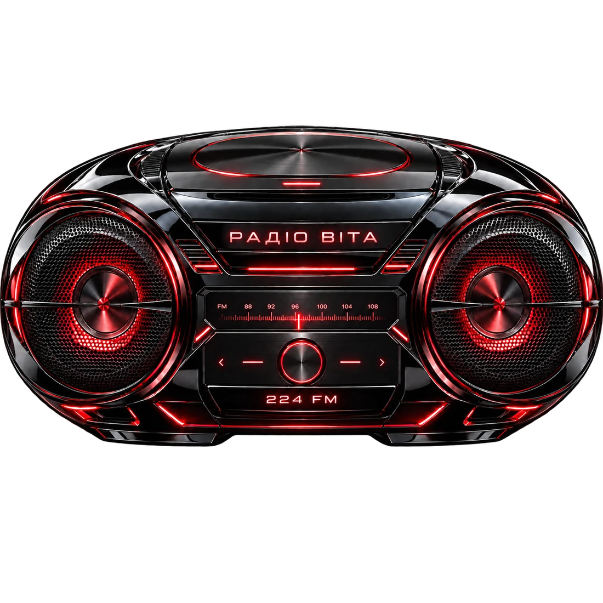

СИСТЕМА ВІТА / РАДІОКІМНАТА
На її хвилі.224 FM
Твоя ніч. Її музика.
Одинадцять сигналів, які залишаються з тобою.

VITA RADIO / 224 FM11 ТРЕКІВ · ОДНА ЧАСТОТАVICTORIA SIDNEY RECORDS
VITA RADIO224 FMНА ЇЇ ХВИЛІМУЗИКА ЇЇ СВІТУVITA RADIO224 FMНА ЇЇ ХВИЛІМУЗИКА ЇЇ СВІТУVITA RADIO224 FMНА ЇЇ ХВИЛІМУЗИКА ЇЇ СВІТУVITA RADIO224 FMНА ЇЇ ХВИЛІМУЗИКА ЇЇ СВІТУ
01 / СТУДІЯ ВІДКРИТА
Увімкни свою частоту.
ГОТОВО ДО ЕФІРУ01 / 11
ДилеR
ГУЧНІСТЬ
Обери трек і натисни відтворення.
02 / MUSIC SELECTOR
Одинадцять сигналів.
03 / ЗА МЕЖАМИ ЕФІРУ